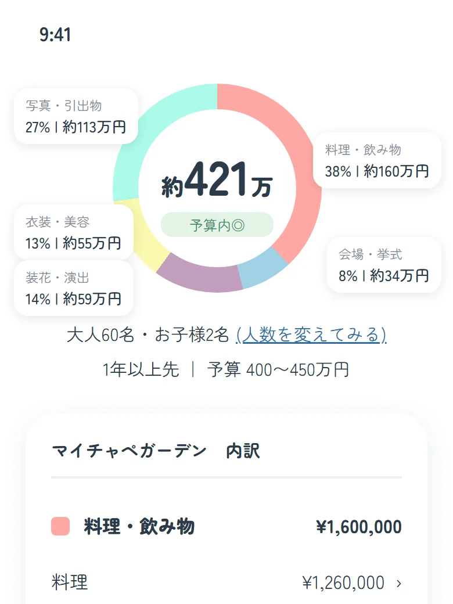

結婚式の費用シミュレーション｜自分で見積もってみよう
はじめまして！マイチャペのチャペさんです。
「結婚式って、結局いくらかかるの？」「ご祝儀を引いたら、自分たちの負担はいくら？」。式場を探し始めると、こんな疑問が、次々に出てきますよね。
Xやブログ、口コミとかで見積もりを知ることができても、自分たちの場合はいくらになるのか、なかなか分かりませんよね。そこで今回は、自分でおおまかな費用を出してみる方法をまとめてみました。数字を入れながら、読んでみてください。
そもそも結婚式の費用は、どうやって決まる？
結婚式の費用は、大きく3つに分けて考えると、整理しやすくなります。
| 種類 | 主な費目 |
|---|---|
| 人数で変わる費用 | 料理・飲み物(お子様の料理を含む)、引き出物・引き菓子、招待状・席札などのペーパー類、装花(テーブルの数) |
| あまり変わらない費用 | 会場費、挙式料、衣装(新郎新婦・両親)、ヘアメイク、写真・映像(前撮りを含む)、司会、音響・照明・演出、ブーケ |
| あとから加わる費用 | サービス料・消費税、持ち込み料(衣装などを持ち込む場合) |
この中で、「人数で変わる費用は、1人あたり×人数」「あまり変わらない費用は、式場の見積もりから」と考えるのが、自分で見積もるときの基本です。主な費用を簡単に解説しますね。
- 会場費
- 披露宴会場や控室など、会場を使うための費用です(会場使用料とも呼ばれます)。
- 挙式料
- チャペルや神前などで、挙式を行うための費用です。含まれる内容は、式場によって違います。
- 衣装
- ウェディングドレス、カラードレス、タキシード、和装などです。式場が提携している国内・海外のブランドから選ぶことが多く、式場が直接貸し出すこともあります。
- 写真・映像
- 型物写真(家族・親族やゲストとの、決まった構図の記念写真)、アルバム、エンドロール(ゲストの名前などを流す、エンディングの映像)、当日のビデオなどです。挙式の前に撮影する「前撮り」も、ここに含めることがあります。
- 装花
- 会場やテーブル、ブーケなどに飾る花のことです。
- 司会
- 披露宴を進行する担当です。式場の専属の人や、外部の司会者が担当します。
- 音響・照明・演出
- 披露宴の音楽や明かり、演出の費用です。
- 引き出物・引き菓子
- ゲストにお渡しする贈り物のことです。引き出物がメインの贈り物で、引き菓子はお菓子です。
- サービス料
- 料理や飲み物などの金額に、一定の割合で加わる費用です(式場によって、割合が違います)。
手順① 人数と、式のスタイルを決める
まず、おおまかな招待人数と、式のスタイルを決めます。リクルートが調べたレポート(結婚マーケット調査2025)を、見てみましょう。式のスタイルによって、費用の目安が、大きく違います。
| 式のスタイル | 総額の平均 |
|---|---|
| 挙式と披露宴・パーティーの両方 | 298.6万円 |
| 挙式のみ | 140.4万円 |
| 食事会のみ | 39.5万円 |
挙式と披露宴の両方をした人の招待客は、平均57.2人でした。総額の平均298.6万円を、この人数で割ると、1人あたり約5万円の計算になります。
手順② 人数で変わる費用を出す
次に、人数で変わる費用を出してみましょう。1人あたりの目安は、料理・飲み物が約2万円、引き出物などが約1万円です。招待人数を入れると、人数で変わる費用の目安が出ます。
計算表 人数で変わる費用の目安
人数で変わる費用の目安: —
たとえば50人なら、150万円が、人数で変わる費用の目安です。人数を変えると、そのぶん、増えたり減ったりします。会場費・挙式料・衣装・写真・装花などの「あまり変わらない費用」は、気になる式場の見積もりで確認しましょう。
手順③ 漏れがちな項目を確認する
見積もりは、あとから上がることがあります。先ほどのレポートでは、見積もりより最終的な支払いが上がった人は48.2%、上がった人の平均は+70.4万円でした。見積もりをもらったら、入っていないことが多い項目を、確認しておきましょう。
| 確認したい項目 | ポイント |
|---|---|
| 衣装・小物 | お色直し(2着目)、ティアラ・靴・アクセサリーなどが入っているか |
| ヘアメイク | 当日のメイク・ヘアセット、リハーサルが入っているか |
| 料理・飲み物 | コースのランク、飲み放題の範囲、お子様の料理 |
| 装花 | テーブルの数、会場の装飾、ブーケ、贈呈用の花束 |
| 写真・映像 | カット数、アルバム、エンドロールなどの映像 |
| 司会・音響・照明・演出 | 司会者、音響・照明の使用料、演出が入っているか |
| 引き出物・ペーパー | 引き出物・引き菓子の数、招待状・席次表・席札・メニュー表 |
| 家族・ゲストの分 | 親族の衣装・着付け、遠方のゲストの交通・宿泊 |
| サービス料・消費税 | 含まれているか |
| 持ち込み | 衣装・カメラマンなどを持ち込めるか。持ち込み料がかかるか |
手順④ ご祝儀を引いて、自己負担を考える
最後に、ご祝儀を考えます。先ほどのレポートでは、ご祝儀の1人あたりの平均は、友人（勤務先以外）が2.9万円、上司が4.2万円、親族が4.8万円でした。
たとえば、招待人数が50人（親族20人・友人27人・上司3人）なら、ご祝儀は約187万円です（親族4.8万円×20人＋友人2.9万円×27人＋上司4.2万円×3人）。
手順②の計算表で、50人の場合に出た、人数で変わる費用は150万円でした。ご祝儀の約187万円があれば、人数で変わる費用は、おおむねまかなえる計算になります。
自分で計算するのが大変なら、
マイチャペにおまかせ!
マイチャペは結婚式場ごとの見積もりを簡単に
シミュレーションできるアプリです。
気になる式場を、地域から探せる!
お住まいの地域の式場や、ご予算に合う式場が並びます。式場名で検索もできます。
ブライダルフェアや公式プランなどの情報が一目でわかる!
詳細画面に入ると、公式サイトやプラン、ブライダルフェアに関する情報を見ることができます。
気に入った式場は、その場で見積もりを確認できる!
ハートをつけた式場は、条件を入れるだけで、概算の見積もりを内訳つきで確認できます。

自分に合う条件を設定して、いくつかの式場を見比べてみると、新しい式場との出会いにも、つながるかもしれません。
よくある質問
結婚式の費用は、何から決めればよいですか？
まず、招待する人数と、式のスタイル(挙式と披露宴の両方か、挙式だけか、食事会か)を決めるのがおすすめです。この2つで、費用の大きさが決まります。そのあとで、式場のタイプや時期を選んでいくと、見積もりを比べやすくなります。
人数を減らすと、どれくらい安くなりますか？
安くなるのは、人数で変わる費用(料理・飲み物・引き出物など)です。この記事の目安(1人あたり約3万円)なら、10人減らすと約30万円の違いです。会場費・挙式料・衣装などは、人数が変わっても、あまり変わりません。
ご祝儀は、どう考えればよいですか？
関係性ごとの平均(親族4.8万円・上司4.2万円・友人2.9万円)に、招待する人数を掛けると、おおまかな金額が出ます。ただし、地域や関係性で変わるので、あくまで目安として、予算を立てるときは、少なめに見ておくと安心です。
結婚式の自己負担は、どう計算しますか？
総額から、ご祝儀(会費制の場合は会費)を引いた金額が、おおまかな自己負担です。親・親族の援助がある場合は、さらに、その分を引いて考えることもあります。たとえば、総額300万円で、ご祝儀が約187万円なら、自己負担は約113万円です。
式場の見積もりは、何を見て比べればよいですか？
人数・日取り・式のスタイルなどの条件を、そろえたうえで、含まれている項目を見比べるのがポイントです。同じ金額でも、衣装・装花・写真などが入っているかで、中身が違います。「入っていないものは何か」も、確認しておきましょう。
アプリで出る金額は、どう使えばよいですか？
気になる式場を、同じ条件で見比べるための、目安として使えます。アプリの金額は、概算なので、実際の金額は、式場に確認してください。